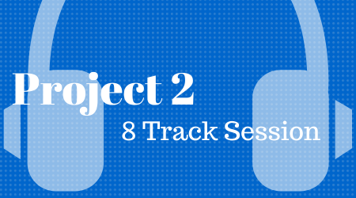

8 Track Session
Using Adobe Audition, Logic Pro X in the classroom, or any other DAW or your choice, create an audio composition and upload the audio file to Google Drive, Dropbox, or another storage service of your choice.
Your project must meet the following criteria:
- At least 1 minute long
- Contain 8 distinct tracks
- At least 1 track of recorded audio (using a microphone – desktop or mobile)
- At least 1 midi track that you play the keyboard on (sound effect or music OK)
- At least 1 track must have noticeable volume automation
- At least 1 track must have noticeable panning automation
Please include a screenshot DAW session in your email.